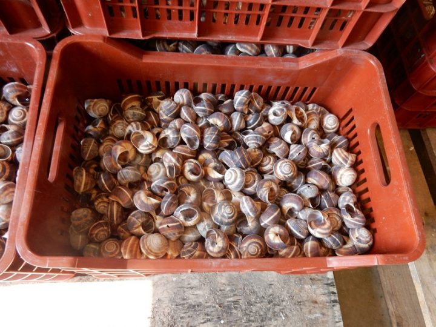
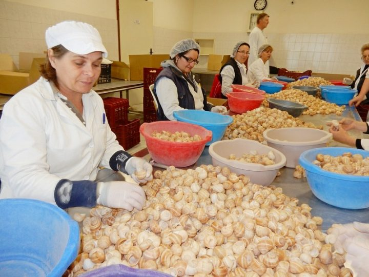
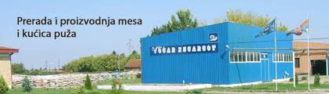

Naša firma se bavi otkupljivanjem živih puževa, prerada u duboko zamrznuto meso puževa i oprane kućice puževa, skladištenje istih i izvoz. Analizom dosadašnjeg poslovanja proizvodnog pogona, kao i iskustva drugih preduzeća koja se bave sličnim proizvodnim programom, postoji višegodišnji stabilan interes inostranih kupaca za puževe i njihove prerađevine sa našeg podneblja.
U tom pravcu je postavljena koncepcija daljeg razvoja programa u cilju usavršavanja proizvodnje, proširenja asortimana, omogućavanje kontinuiranog rada tokom cele godine, a samim tim i povećanje dobiti. Prema tome, koncepcijom se predviđa dalji razvoj, planira se i teži cilju da prerada dostigne krajnji finalni proizvod, kao što je meso puža vraćeno u kućice sa nadevom i meso puževa u limenkama i staklenim teglama kao finalni proizvod. Takođe, težimo ka povećanju kapaciteta, a samim tim i usavršavanje programa proizvodnje proizvoda.
  